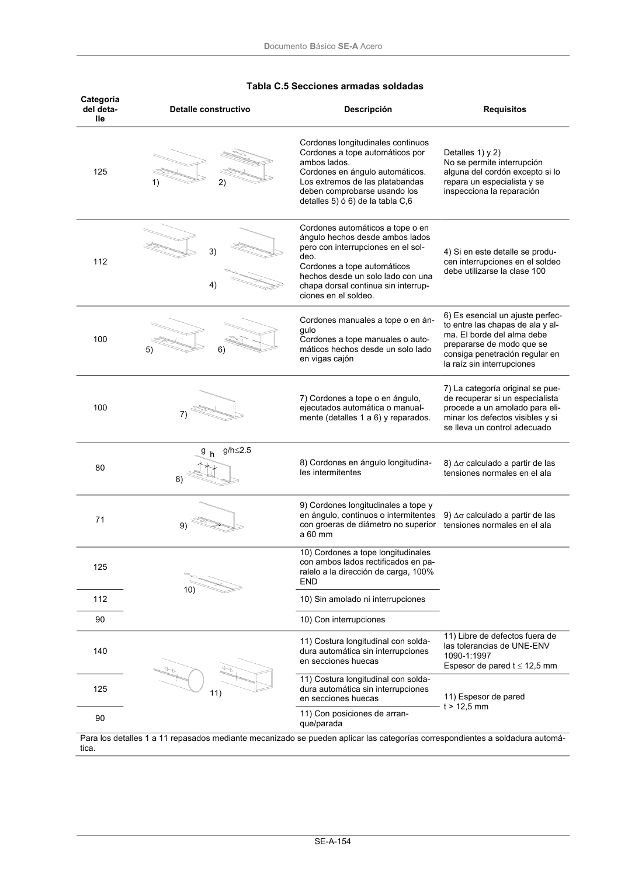

DB-SE-A · Página 156 · versión 2007-10-23
SHA256: 9ed9ea694aabfbda3bfbbef40dfe9223fde05d13c35bc2ba9751e5a96a22a64f · página física 156 de 168 · métodos de encabezado
solo si están cotejados.
Documento · ← p. 155 · p. 157 →
Formatos: Markdown · JSON de bloques · PDF p. 156 · imagen PNG
Documento Básico SE-A Acero SE-A-154 Tabla C.5 Secciones armadas soldadas Categoría del deta- lle Detalle constructivo Descripción Requisitos 125 Cordones longitudinales continuos Cordones a tope automáticos por ambos lados. Cordones en ángulo automáticos. Los extremos de las platabandas deben comprobarse usando los detalles 5) ó 6) de la tabla C,6 Detalles 1) y 2) No se permite interrupción alguna del cordón excepto si lo repara un especialista y se inspecciona la reparación 112 Cordones automáticos a tope o en ángulo hechos desde ambos lados pero con interrupciones en el sol- deo. Cordones a tope automáticos hechos desde un solo lado con una chapa dorsal continua sin interrup- ciones en el soldeo. 4) Si en este detalle se produ- cen interrupciones en el soldeo debe utilizarse la clase 100 100 Cordones manuales a tope o en án- gulo Cordones a tope manuales o auto- máticos hechos desde un solo lado en vigas cajón 6) Es esencial un ajuste perfec- to entre las chapas de ala y al- ma. El borde del alma debe prepararse de modo que se consiga penetración regular en la raíz sin interrupciones 100 7) Cordones a tope o en ángulo, ejecutados automática o manual- mente (detalles 1 a 6) y reparados. 7) La categoría original se pue- de recuperar si un especialista procede a un amolado para eli- minar los defectos visibles y si se lleva un control adecuado 80 8) Cordones en ángulo longitudina- les intermitentes 8) ∆σ calculado a partir de las tensiones normales en el ala 71 9) Cordones longitudinales a tope y en ángulo, continuos o intermitentes con groeras de diámetro no superior a 60 mm 9) ∆σ calculado a partir de las tensiones normales en el ala 125 10) Cordones a tope longitudinales con ambos lados rectificados en pa- ralelo a la dirección de carga, 100% END 112 10) Sin amolado ni interrupciones 90 10) Con interrupciones 140 11) Costura longitudinal con solda- dura automática sin interrupciones en secciones huecas 11) Libre de defectos fuera de las tolerancias de UNE-ENV 1090-1:1997 Espesor de pared t ≤ 12,5 mm 125 11) Costura longitudinal con solda- dura automática sin interrupciones en secciones huecas 90 11) Con posiciones de arran- que/parada 11) Espesor de pared t > 12,5 mm Para los detalles 1 a 11 repasados mediante mecanizado se pueden aplicar las categorías correspondientes a soldadura automá- tica.
